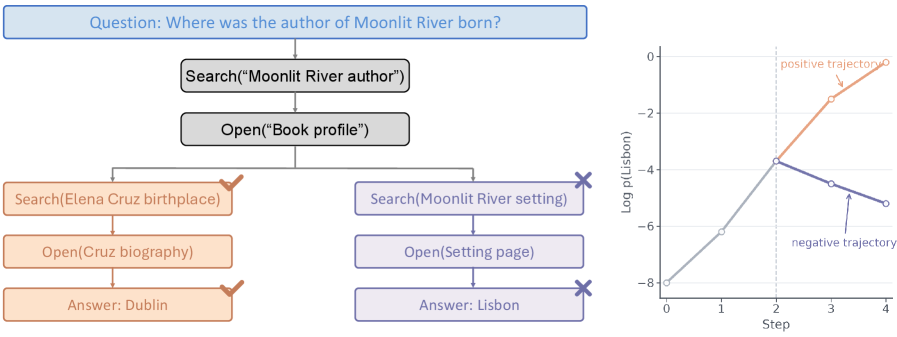
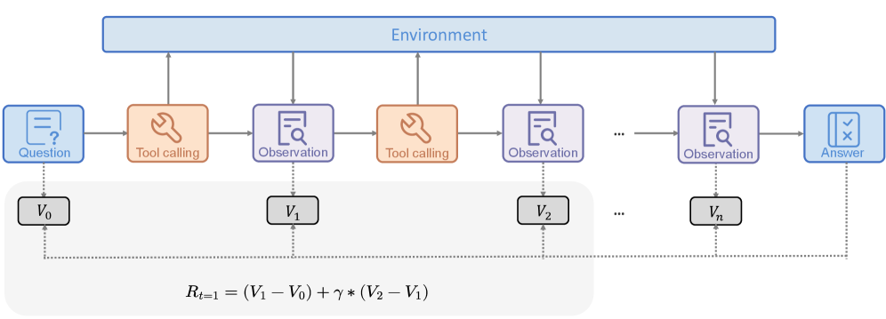

TRACE: Turn-Level Rewards for Long-Horizon Agents
Paper: "TRACE: Turn-level Reward Assignment via Credit Estimation for Long-Horizon Agents" (arXiv 2607.13988, 26 pages). Authors: Leitian Tao, Baolin Peng, Wenlin Yao, Tao Ge, Hao Cheng, Mike Hang Wang, Jianfeng Gao, Sharon Li (UW-Madison + Microsoft Research).
TL;DR
- Outcome-only RLVR degrades as agent trajectories stretch to tens of tool calls: one terminal scalar cannot say which searches found decisive evidence and which were noise. TRACE produces dense turn-level credit with no trained critic, no process labels, no Monte Carlo continuations, and no LLM judge.
- The trick: a frozen reference model scores "answer readiness" — the mean log-probability of the gold answer given each trajectory prefix. A log-ratio transform turns this into a state value; one-step temporal differences of that value become per-turn rewards that telescope, so redundant or repeated tool calls cannot farm credit.
- Trained with GRPO plus this auxiliary signal (weight 0.2 vs. 1.0 for outcome advantage), pure RL from base models lifts Qwen3-4B from 7.2 to 35.6 and Qwen3-30B-A3B from 8.4 to 42.6 on BrowseComp-Plus, beating GRPO, GSPO, and GiGPO under matched data/tools/rewards.
Why this matters
The bottleneck in scaling RLVR to long-horizon agents is not reward verification — it is credit assignment. For short reasoning traces, a verifiable terminal reward plus group-relative advantage (GRPO and descendants) works because the whole trajectory is effectively one decision. But a deep-research or web agent takes 20-60 tool actions before answering; a single trajectory-level advantage smears one bit of information uniformly across every token of every turn. The gradient signal becomes sparse in successes, noisy across turns, and increasingly inefficient as horizons grow — precisely the regime this reading list's agentic-RL thread (AgentGym-RL, OSGym, online multi-turn RL for web agents) is pushing into.
The known fixes all carry heavy costs: human or model-generated process labels (PRM-style) are expensive and brittle; learned critics add instability and their own training loop; Monte Carlo rollout continuations from each prefix (Math-Shepherd-style value estimation) multiply rollout cost by the horizon; strong-LLM-judge step scoring is expensive and gameable. TRACE's pitch is that for tasks with a short verifiable answer, you already have a value function sitting in the base model — you just have to ask it the right question.
The core idea

Figure from the paper: "Credit assignment at tool-call boundaries in a search trajectory... Outcome-reward training attaches one trajectory-level advantage to all actions, whereas TRACE computes prefix values at tool boundaries and assigns turn credit from adjacent value changes."
Progress toward the answer is measurable as the gold answer's predictability under a frozen reference model. For each prefix state S_k (the context after k tool interactions), compute the length-normalized log-likelihood of the gold answer y*:
ℓ̄k = (1/|y|) Σ_t log π_ref(y_t | S_k, y*<t)
If a tool call surfaced decisive evidence, the gold answer becomes more predictable and ℓ̄ rises; a useless call leaves it flat; a misleading detour lowers it. Crucially the reference model is frozen — it is a fixed measuring instrument, not a critic being fit — so the signal is stable across training and costs only forward passes on the (short) gold answer, not rollout continuations.
Raw log-probabilities are then normalized into a log-ratio state value: with d_k = −ℓ̄_k + ε (remaining "uncertainty gap", ε = 0.1),
V(S_k) = log(d_0 / d_k)
so V(S_0) = 0 and halving the remaining gap always earns log 2 of value regardless of absolute probability scale. The per-turn reward is the one-step temporal difference δ_k = V(S_{k+1}) − V(S_k) = log(d_k / d_{k+1}): positive when a call moves the agent toward the answer, near-zero for redundancy, negative for detours.
How it works

Figure from the paper: "TRACE reward construction at tool-call boundaries. Each prefix state is scored by a frozen reference model, transformed into a log-ratio value, and compared with adjacent prefix values to obtain turn-level TD credit."
The four load-bearing equations (paper Eqs. 5-7, 9-11). Answer readiness and the log-ratio state value:
where \(y^{\star}\) is the gold answer, \(S_k\) the trajectory prefix after \(k\) tool turns, \(\pi_{\mathrm{ref}}\) the frozen reference, \(d_k = -\bar{\ell}_k + \epsilon\) the remaining uncertainty gap (\(\epsilon = 0.1\)).
the one-step TD reward: positive when a turn shrinks the gap, near-zero for redundancy, negative for detours — and the \(\delta_k\) telescope to \(V(S_T)-V(S_0)\).
the normalized K-step backup (\(K=3\), \(\gamma_{\mathrm{td}}=0.8\), window end \(h_k = \min(k{+}K{-}1, T{-}1)\)) that lets a search collect credit when a later open cashes it in.
terminal anchoring (\(\lambda_{\mathrm{term}}=2.0\)) injects the group-normalized outcome advantage \(A^{\mathrm{out}}\) into windows touching the end, and the mixed per-token advantage \(\hat A_t\) (\(\alpha_{\mathrm{out}}=1.0\), \(\alpha_{\mathrm{turn}}=0.2\)) feeds the standard clipped GRPO objective.
# TRACE: reward construction + policy update (per prompt x, gold answer y*)
sample G trajectories τ_g ~ π_old(·|x) # up to 60 tool turns each
R_g ← verify(ŷ_g, y*); A_out ← GroupNorm(R_1..R_G)
for each trajectory g:
for k = 0..T: # prefix after k tool turns
ℓ̄_k ← mean log π_ref(y* | S_k) # frozen ref, forward pass only
d_k ← −ℓ̄_k + ε; V_k ← log(d_0 / d_k)
for k = 0..T−1:
δ_k ← V_{k+1} − V_k # telescoping TD credit
h_k ← min(k+K−1, T−1)
c_k ← (Σ_{u=k..h_k} γ_td^{u−k} δ_u) / Z_k # K-step backup, K=3
r_k ← c_k + 1[h_k = T−1]·λ_term·γ_td^{T−k}·A_out
map turns to token positions
Â_t ← α_out·A_out + α_turn·r_turn(t) # 1.0 / 0.2 mixing
update π_θ with clipped GRPO on Â_t
Telescoping. Because rewards are TD differences of a single potential-like value, they sum to V(S_T) − V(S_0) along any trajectory. Total credit depends only on endpoints: re-running the same search or reopening the same page cannot accumulate extra one-step credit. This is the classic potential-based-shaping guarantee applied at the turn level.
K-step look-ahead for delayed effects. A search that surfaces a promising page pays off only when a later open extracts the evidence. TRACE therefore assigns turn k a truncated, discounted K-step backup of downstream TDs: c_k = (1/Z_k) Σ_{u=k}^{h_k} γ_td^{u−k} δ_u, with K = 3, γ_td = 0.8, and h_k the window end. This spreads localized credit backward without full-horizon variance.
Terminal anchoring. When a turn's backup window touches the trajectory end, a scaled outcome advantage is injected: r_k = c_k + 1[h_k = T−1] · λ_term · γ_td^{T−k} · A_out (λ_term = 2.0). Verifiable correctness remains the ultimate arbiter; reference-model progress only shapes the interior.
Training objective. Standard clipped GRPO, but the per-token advantage on tool-interaction tokens mixes both signals: Â = α_out · A_out + α_turn · r_turn, with α_out = 1.0 and α_turn = 0.2. Outcome advantage is group-normalized as usual; turn rewards are used directly. Setup: Qwen3-4B-Thinking-2507 and Qwen3-30B-A3B-Thinking-2507, pure RL (no cold-start SFT, no agentic mid-training), ReAct-style loop with browser.search / browser.open / browser.find over a closed FAISS corpus (Qwen3-Embedding-8B), synthetic multi-document search tasks requiring chained retrieval over irreplaceable evidence, up to 60 tool turns, batch 128, 8 rollouts/prompt, lr 1e-6.
Results
Numbers from the paper (Table 1); all methods share models, data, tools, and outcome rewards.
Qwen3-4B: Base 7.2 / GRPO 30.0 / GSPO 29.7 / GiGPO 27.7 / TRACE 35.6 on BrowseComp-Plus. Averages across BrowseComp-Plus, BrowseComp, GAIA, xbench-DeepSearch: TRACE 34.0 vs. GRPO 29.5, GSPO 28.2, GiGPO 26.5.
Qwen3-30B-A3B: Base 8.4 / GRPO 36.4 / GSPO 39.7 / GiGPO 33.0 / TRACE 42.6 on BrowseComp-Plus; average 38.1 vs. 33.3 for the best baseline. Despite closed-corpus training, it transfers to open web (Serper): 12.9 BrowseComp, 52.0 GAIA, 45.0 xbench-DeepSearch — the tweet's "on par with Tongyi-DeepResearch-30B-A3B" refers to BrowseComp-Plus (42.6 vs. 44.4), though Tongyi remains well ahead on GAIA/xbench (70.9/75.0), presumably reflecting its agentic mid-training and live-web data.
Ablations (Qwen3-4B, BrowseComp-Plus): credit format matters — raw delta 32.4, gap-normalized 34.6, log-ratio 35.5 vs. 30.0 outcome-only. α_turn peaks at 0.2-0.3; α_turn = 1.0 collapses to 31.1 (outcome anchor weakens). K = 1-3 is the sweet spot (34.7-35.6); K = 0 recovers GRPO (30.0); K = 10 hurts (28.9). Swapping the frozen reference from the step-0 checkpoint to a step-200 one barely moves results (35.6 → 36.1) — the reference's job is stable anchoring, not being a good teacher.
How it connects
Within this reading list, TRACE is the credit-assignment node of the agentic-RL cluster. GiGPO (a baseline here) also targets turn-level advantage via grouping, and loses under matched conditions — evidence that where the dense signal comes from matters more than merely having per-turn structure. AgentGym-RL, OSGym, and the online multi-turn RL for visual web agents entries supply the environments and infrastructure this method presumes; Molt's hackable trainer is the natural place to implement a custom advantage mixer like TRACE's. MiroEval (process+outcome evaluation for deep-research agents) is the evaluation-side mirror of the same conviction: outcomes alone under-specify agent quality. Rubric-Generated Feedback as Privileged Information is a sibling approach — both exploit privileged training-time information (gold answers, rubrics) to densify reward without a critic. There is also a quiet connection to the reading list's distillation thread: using a frozen model's likelihoods as a training signal is structurally close to on-policy distillation (OPD survey, MiniLLM), except the "teacher" here scores only the gold answer's predictability rather than the policy's tokens.
Against well-known prior work: the telescoping construction is potential-based reward shaping (Ng et al., 1999) with a learned-for-free potential; the TD machinery is textbook Sutton-Barto. The contrast set is PRMs (Lightman et al., "Let's Verify Step by Step") which need step labels, Math-Shepherd-style MC value estimation which needs continuation rollouts, and critic-based methods (PPO/GAE) which need a trained value head — TRACE needs none of these, at the price of requiring a short gold answer to exist.
Critical take
- Scope is genuinely narrow, and the authors say so. The state-value proxy requires a short, ground-truth-comparable final answer. For multi-file code patches, open-ended synthesis, or underspecified user goals — most of the long-horizon agent economy — "gold-answer log-likelihood" is undefined or misleading. The proposed extensions (execution-based progress signals, decomposed verifiable subgoals) are exactly the hard part and are future work.
- Reward-model leakage risk. The reference model sees the gold answer at training time. If evidence in the corpus makes the answer string predictable for spurious reasons (surface overlap, entity frequency), the agent gets rewarded for surfacing text that resembles the answer rather than evidence that entails it. Telescoping bounds accumulation but does not prevent locally hackable δ's from shaping behavior toward likelihood-raising rather than truth-finding; the paper's closed synthetic corpus may understate this on messier data.
- Absolute numbers are modest. 35.6/42.6 on BrowseComp-Plus and 6.7/12.9 on open-web BrowseComp are far from specialized systems with agentic mid-training (Tongyi-DS at 44.4/43.4). The claim is a controlled algorithmic delta (+5-6 points over GRPO), not SOTA — read it as such.
- Hyperparameter surface. α_turn, K, γ_td, λ_term, ε are all tuned, and the ablations show meaningful sensitivity (α_turn = 1.0 or K = 10 underperform plain GRPO's baseline behavior). Whether the sweet spot transfers across task families and horizon lengths is untested.
- Cost accounting is understated in the pitch. "No MC continuations" is true, but every prefix still requires reference-model forward passes over the gold answer at each of up to 60 turn boundaries per rollout — cheap relative to continuations, not free at scale.
- Open questions: does the same construction work when the "answer" is a verifier program's pass signal (unit tests) rather than a string? Can the reference model be much smaller than the policy? How does the signal behave under distribution shift as the policy learns to write prefixes unlike anything the frozen reference has seen?
If you remember three things
- Dense turn-level credit can be extracted from a frozen reference model's likelihood of the gold answer — V(S_k) = log(d_0/d_k) on the remaining uncertainty gap — with no critic, labels, judges, or continuation rollouts.
- TD differences of that value telescope, so repeated or redundant tool calls cannot farm credit, and a K-step backup (K≈3) plus terminal outcome anchoring handles delayed payoffs while keeping the verifiable reward in charge.
- Under matched everything, it adds +5-6 points over GRPO/GSPO/GiGPO on long-horizon search (Qwen3-4B: 7.2→35.6; 30B-A3B: 8.4→42.6 on BrowseComp-Plus) — but only for tasks with short verifiable answers; extending the value proxy beyond that regime is the open problem.